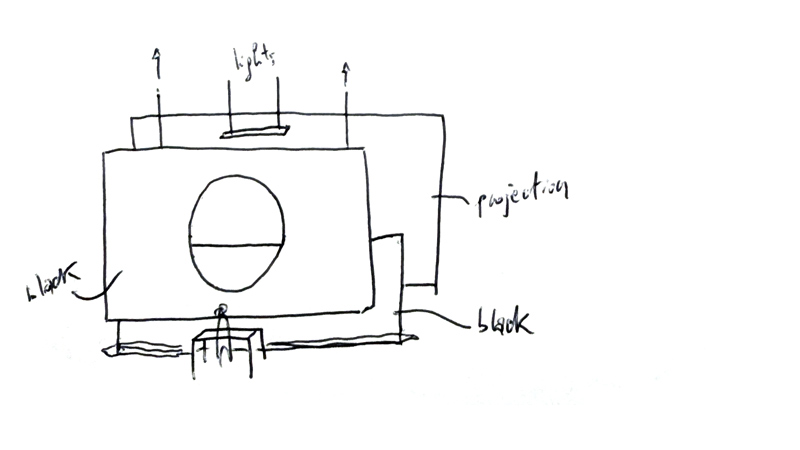

Tell me the sun comes out of the night
Music: Marta De Pascalis
Lights: Marco Ciceri
Duration 45'


Marta De Pascalis’ sonic world acts as an uncanny translator that freezes and expands emotions, conveying them into unique soundscapes. Her solo works employ analog, fm synthesis, and a tape-loop system, whereby she carves waveforms to shape cathartic sound bodies. Sky Flesh, her latest album, has been published on Caterina Barbieri’s light-years imprint.
Marco Ciceri is a visionary Italian visual artist, based in the dynamic hub of Berlin. Renowned for his immersive live shows and groundbreaking installations, he masterfully blends light and video into breathtaking experiences. With a five-year tenure at the avant-garde collective Pfadfinderei, preceded by a pivotal role at the internationally acclaimed Marshmallow Laser Feast in London, Marco’s career trajectory is marked by exceptional collaboration and innovation. Armed with a design and arts degree from the University of Bolzano in Italy, he seamlessly integrates software-driven automation and physical mechanics into his animations, crafting intricate, fluid worlds. Marco’s work is a testament to his relentless pursuit of aesthetic perfection, where multiple mediums converge to create unparalleled visual spectacles.
2024